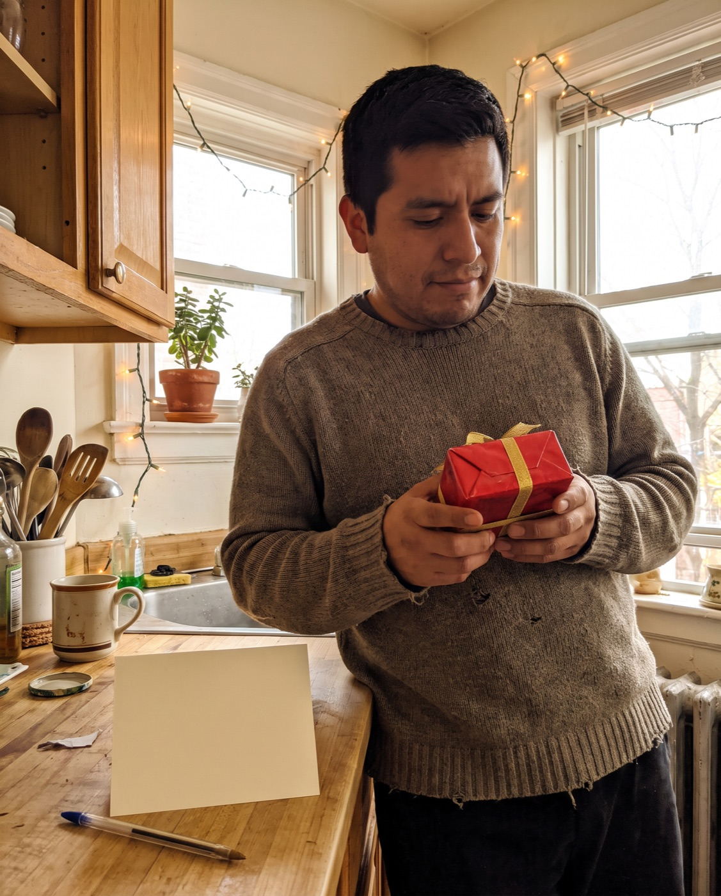
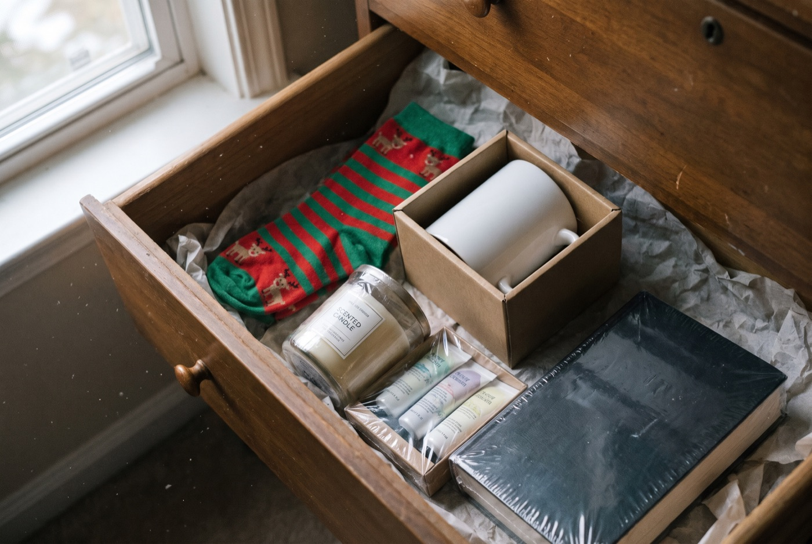
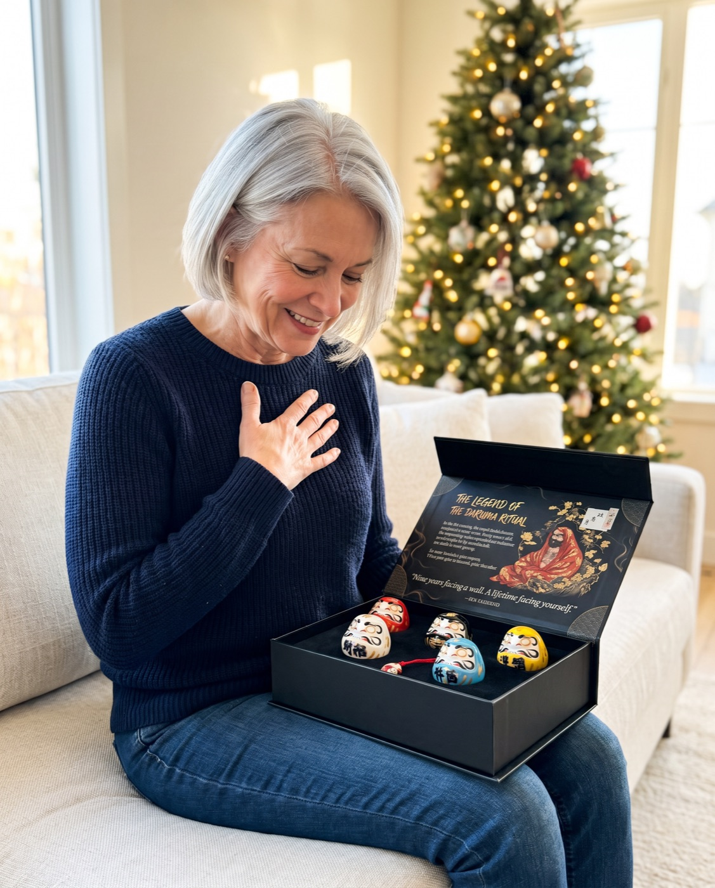

Christmas gifts
The Quiet Fear Behind Every Christmas Gift (and How to Stop Worrying About It)
You want them to open it and feel seen, not polite. Here's how to tell, before you buy, whether a gift will be remembered or forgotten.

Everyone knows the moment. They open it, smile, say "oh, that's nice," and put it down a little too quickly.
Nobody says anything. But you both know.
If you'd rather skip that moment this year, the short version is below. The longer version is underneath.
Official Daruma Ritual store · Free tracked shipping worldwide · 30-day returns
4 signs a gift will be forgotten

1. It could be for anyone
If the same gift would work for your boss, your neighbour and your sister, it doesn't say anything about any of them.
2. It's finished in a week
Candles burn down. Chocolate gets eaten. They're lovely, and then they're gone, and so is the memory of who gave them.
3. It has nowhere to live
Gifts that don't have an obvious place end up in a drawer, a closet or a regifting pile.
4. It asks nothing of them
This is the one most people miss. The gifts we remember are the ones we did something with.
Why a ritual gift lands differently
A Daruma is a round Japanese doll that comes with no eyes. The person you give it to chooses one goal and paints the first eye. Then it sits on their desk or shelf, one eye open, until the goal is done. That's when they paint the second.
It's a 400-year-old New Year tradition, and it passes all four tests:
- It's personal: they choose the goal, and each colour carries its own meaning
- It isn't used up. It stays out until the goal is done
- It has an obvious home, where they'll see it every day
- It asks them to do one thing: decide what they want next year to hold

The best gifts aren't things. They're a vote of confidence.
What happens when they open it
Most gifts get one moment: the unwrapping. A Daruma gets three.
The opening. The black box with its gold emblem looks like something worth keeping. Inside the lid, the legend tells the story of a monk who sat facing a wall for nine years and wouldn't give up.
New Year's Day. They choose a goal and paint the first eye. Often they'll message you to tell you what they picked.
The day it's done. They paint the second eye. Whenever that is, they'll remember who gave it to them.
Five colours, so nobody gets the "generic" gift
Each set has five ceramic Daruma, and each colour stands for a different wish: red for fortune, white for wealth, black for strength, yellow for safety, blue for peace. Give the whole set to one person, or share the colours out between a family so everyone gets their own.
What's in the box
- 5 ceramic Daruma in red, white, black, yellow and blue
- A matte-black magnetic keepsake box with a velvet tray, ready to give
- The legend and ritual cards, so they know exactly what to do
- A chiming Daruma keychain
Official Daruma Ritual store · Free tracked shipping worldwide · 30-day returns
What people wrote to us
“I was absolutely wowed when I received the package today. Both sets arrived completely unharmed. I am going to give them as holiday gifts. Blessed and grateful.”
“I received my Daruma a few weeks ago and it has become a daily source of motivation for me. It reminds me to stay focused on my goals and to keep showing up. … Thank you for creating something so meaningful!”
If it's not right, send it back
You have 30 days after it arrives to request a return. Shipping is free and tracked to every country. International post is slower in December, so order early for Christmas.
 1 Premium Set
1 Premium Set5 Daruma + 1 chiming keychain
2 Premium Sets10 Daruma + 2 keychains + $20 gift card free
3 Premium Sets15 Daruma + 3 keychains + $20 gift card free
Each set: 5 ceramic Daruma, matte-black magnetic box, legend & ritual cards. Free tracked shipping.
Official Daruma Ritual store · Free tracked shipping worldwide · 30-day returns
What exactly is in a set?
Five ceramic Daruma in red, white, black, yellow and blue, a matte-black magnetic gift box with a velvet tray, the legend & ritual cards, and a chiming Daruma keychain.
Is a pen or marker included?
No. Any black marker or brush pen works for the eyes.
Do I need to know anything about Japanese culture?
No. The ritual card in the box explains the steps in a minute.
How does shipping work?
Shipping is free and tracked to every country. The delivery estimate is shown at checkout; international post is slower in December, so order early for Christmas.
What if it's not right?
You have 30 days after it arrives to request a return.